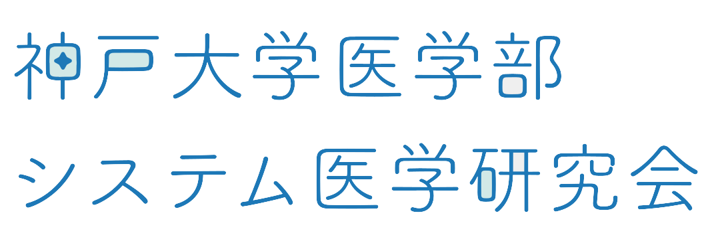

医療自動化を実践する
活動内容

部員
神戸大学医学部システム医学研究会では、1回生から6回生までの約10~20人が活動しています。
義務がなく兼部しやすいため他部活や研究室、バイトと両立している人がほとんどです。
編入生や再受験生が多数在籍しています。女性部員も在籍しています。
部長紹介
医療自動化を実践する
神戸大学医学部システム医学研究会では、1回生から6回生までの約10~20人が活動しています。
義務がなく兼部しやすいため他部活や研究室、バイトと両立している人がほとんどです。
編入生や再受験生が多数在籍しています。女性部員も在籍しています。
部長紹介